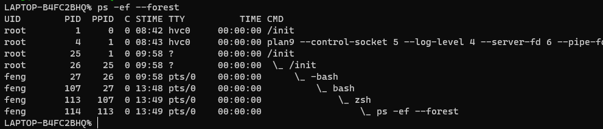
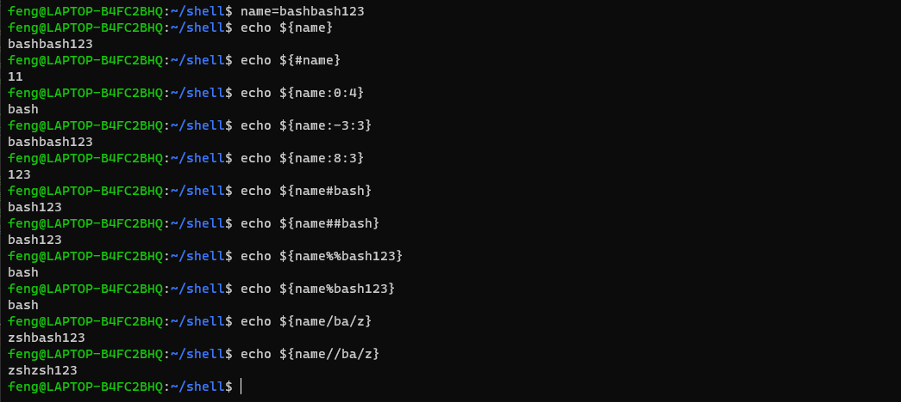
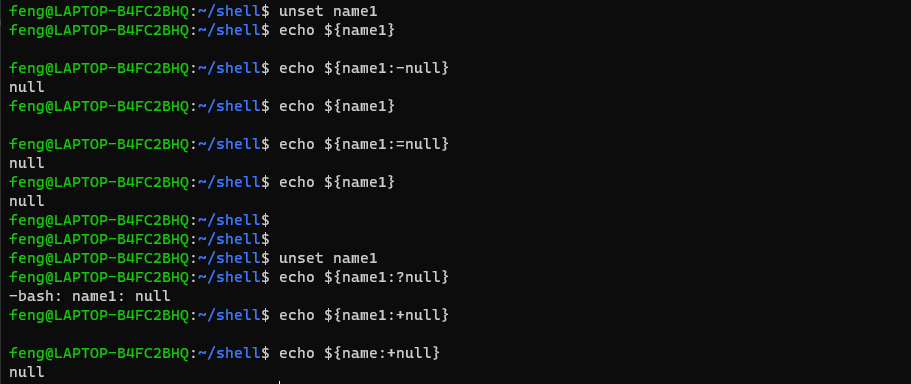
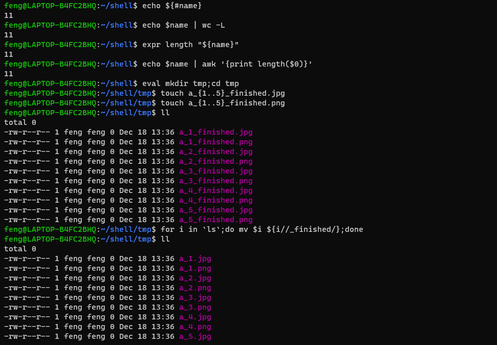
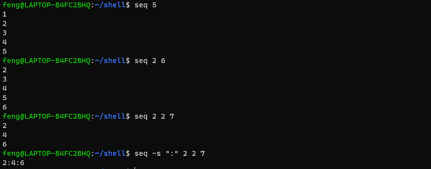
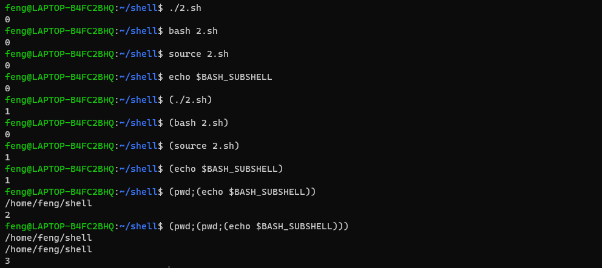
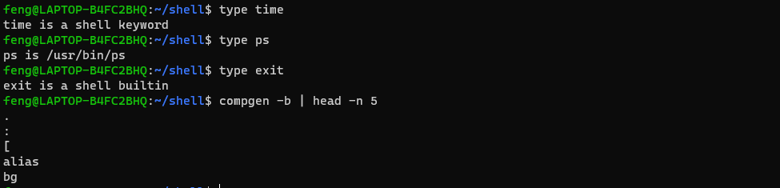

前言
不容易有点学习时间，得抓紧补齐技术空缺了。打算快速肝完 shell 这块基础的。
Shell 基础
history
history 调用历史文件。bash一般在 ~/.bash_history 文件中。zsh一般在 ~/.zsh_history 文件中。以此类推。
进程，环境变量、参数相关
1
2
3
4
5
6
7
8
9
10
11
12
13
14
15
16
17
18
19
20
21
22
23
24
25
26
27
| !!
pstree
ps -ef --forest
bash
source xxx.sh
set
env
declare
export
unset
$0
$1
$#
$*/$@
$?
$$
$!
$_
eval mkdir a;cd a;mkdir b;cd b;mkdir c;cd c
exec echo "exit"
|

输出相关
1
2
3
4
5
|
echo -e "123\n"
echo -n "123"
printf "123\n"
|
常见解析符号：
字符串操作
1
2
3
4
5
6
7
8
9
10
11
12
| name=bashbash123
echo ${name}
echo ${#name}
echo ${name:start:length}
echo ${name#str}
echo ${name##str}
echo ${name%str}
echo ${name%%str}
echo ${name/a/b}
echo ${name//a/b}
|

1
2
3
4
5
|
echo ${name:-word}
echo ${name:=word}
echo ${name:?word}
echo ${name:+word}
|

1
2
3
4
5
6
7
8
9
10
|
echo ${#name}
echo $name | wc -L
expr length "${name}"
echo $name | awk '{print length($0)}'
touch a_{1..5}_finished.jpg
touch a_{1..5}_finished.png
for i in `ls`;do mv $i ${i//_finished/};done
|

序列
1
2
3
4
| seq 5
seq 2 6
seq 2 2 7
seq -s ":" 2 2 7
|

进程和线程
shell 和 bash 都是独立的进程或者说是子进程。除此之外，bash 还有多线程。
以下自己体会~~

内置命令和外置命令
内置命令：bash 在编译的时候，预设的命令。在启动 bash 后就已经加载在内存中。
外置命令：存储在磁盘中的（脚本文件，二进制文件等）通过环境变量执行的命令
1
2
3
4
5
6
7
|
compgen -b
type time
type ps
type exit
|

特殊符号总结
1
2
3
4
| ${name}
$(cmd)
`cmd`
(cmd)
|